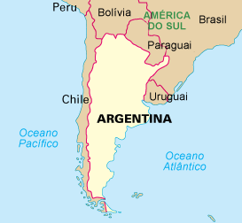

Introdução
Neste site, você encontra-rá mais sobre a história da Argentina, incluindo seus movimentos de independência, seus períodos de instabilidade política, sua geografia, sua diversidade geografica, a cultura do país, economia, agricultura, exportações, sistema político, governo, suas relações internacionais e seus laços regionais entrando mais a fundo sobre todos esses temas e contar um pouco mais sobre como o país já foi, e como está atualmente.

História
História da Argentina: A Argentina foi uma das colônias da Espanha na América durante as Grandes Navegações. O território argentino começou a ser colonizado por volta de 1500. Os movimentos independentistas locais deram origem, primeiramente, ao Vice Reino do Rio da Prata e, mais precisamente em 1861, à Repúblicada Argentina.

Movimentos de independência da argentina: A Independência da Argentina foi proclamada em 1810. Até 1810, o território da atual Argentina (colônia) era governado pela Espanha (metrópole) e fazia parte do Vice-Reinado do Rio da Prata. Foi em 25 de maio de 1810, durante a Revolução de Maio, que os argentinos proclamaram sua independência.

Períodos de instabilidade política da argentina:Entre 1930 e 1983, foram 6 golpes de Estado, 5 dos quais resultaram em ditaduras. Uma essência foi mantida: o nacionalismo. Sucessivamente, esses governos adotaram políticas protecionistas e de substituição de importações. O objetivo era tornar a Argentina autossuficiente.
Economia
Economia da antiga Argentina: Em meados do século XIX, a economia da Argentina começou a experimentar um rápido crescimento na exportação de matérias-primas de gado. Isto marcou o início de um período significativo de expansão macroeconômica. Com as mudanças na produção e exportação de forte crescimento de sua economia estar dentro das principais potências mundiais. Durante esses anos manteve a sua posição de destaque como 10ª nação mais rica percapita do mundo em 1913[10] A partir da década de 1850 começou a desenvolver um mercado de trabalho (contratação de funcionários), principalmente na província de Buenos Aires.

Atualmente: Depois da pandemia dos anos de 2020 e metade de 2021, a economia entrou em colapso fazendo com que a situação do país ficasse em graves indices de economia, entretanto, a adoção do dólar como moeda oficial poderia controlar a inflação no país no curto prazo, mas outros problemas poderiam aparecer, já que o país perderia o manejo da política monetária e a capacidade de estabilizar a economia com base nas necessidades locais. No entanto, a medida não resolve todos os problemas econômicos no país e pode trazer outras consequências negativas, já que os rumos da moeda e da economia como um todo ficariam totalmente vinculados e dependentes das decisões do Federal Reserve (Fed), o banco central dos Estados Unidos.

Geografia
A Geografia da Argentina é um domínio de estudos e conhecimentos sobre todas as características geográficas do território argentino. A Argentina pode ser dividida esquematicamente em quatro partes: as planícies férteis das Pampas na metade norte do país, que são o centro da riqueza agrícola da Argentina, o planalto da Patagónia na metade sul até à Terra do Fogo, por vezes plano, por vezes ondulado, a escarpada cordilheira dos Andes ao longo da fronteira ocidental com o Chile, cujo ponto mais elevado é o monte Aconcágua, com 6960 m de altitude e a planície do Chaco compartilhada com a Bolívia, o Paraguai e o Brasil.
Cultura
Há no país uma grande diversidade de atividades culturais e artísticas de renome internacional — teatro, pintura, escultura, música e literatura. As cidades mais importantes, notadamente Buenos Aires, são palco diário de conferências, concertos, exposições, museus, cursos, peças de teatro e balé. Os cinemas são abundantes nas grandes cidades. A música popular como o tango, a música tradicional e até o rock são interpretados e dançados em locais de ampla afluência pública. O tango é um dos principais símbolos da Argentina, e é considerado um patrimônio mundial. Essa dança sensual é uma manifestação artística que é uma verdadeira marca dos argentinos, sendo mais uma forma de atrair pessoas de todo o mundo para o país. No que respeita à gastronomia é especialmente conhecida pelo seu churrasco
Relações Internacionais
A Argentina tem como característica uma certa autonomia ideológica com relação às grandes potências, o que não infere autonomia financeira dos mesmos. Nos anos recentes, especialmente após a década de 2000, a Argentina buscou um posicionamento mais neutro com relação aos Estados Unidos e mais próximo aos países vizinhos latino-americanos. Junto ao Brasil, a Argentina é a maior economia e o país mais influente politicamente na América do Sul. As relações internacionais da Argentina são reguladas pelo Ministério das Relações Exteriores (a Cacillaría), estabelecido em 1856 e reformulado mais recentemente em 2011. O atual Ministro das Relações Exteriores é Juan Giapi, indicado pelo Presidente Mauricio Macri.
Atualmente, os presidentes da Argentina, Alberto Fernández, e do Equador, Guillermo Lasso, respectivamente, assinaram vários acordos bilaterais para fortalecer os laços bilaterais em áreas de interesse comum como comércio, pesca, telecomunicações no âmbito da visita que o presidente equatoriano fez a Buenos Aires.
Governo
Após a revisão de 1994, a Constituição da Argentina estabelece a separação dos poderes, quer ao nível nacional, quer ao nível provincial. O presidente e o vice-presidente são eleitos por sufrágio universal para mandatos. Cada eleito só pode exercer dois mandatos consecutivos. O presidente é ao mesmo tempo o chefe de estado e o chefe de governo. É ele que nomeia o governo e, caso de "urgência e necessidade" pode legislar por decreto. O parlamento da Argentina (o Congresso Nacional) tem duas câmaras: o Senado com 72 lugares e a Câmara de deputados (Câmara de deputados) com 257 membros. Os senadores são eleitos por sufrágio universal em cada província. Cada província, incluindo a Capital Federal, tem direito a 3 senadores, que cumprem mandatos de 6 anos. Um terço dos lugares do Senado vão a eleições de dois em dois anos. Os membros da Câmara de Deputados são eleitos para mandatos de 4 anos. O governo da Argentina constitucionalmente a forma de uma democracia representativa, republicana e federal. Devido a seu caráter federal, o país possui duas estruturas de governo: o Governo Nacional (ou Federal) e 23 governos provinciais, cada um dos quais considerados precedentes à nação, exercendo todos os poderes não delegados expressamente ao governo federal.